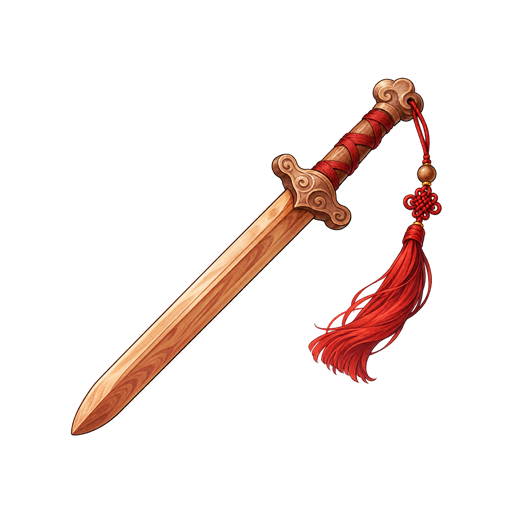
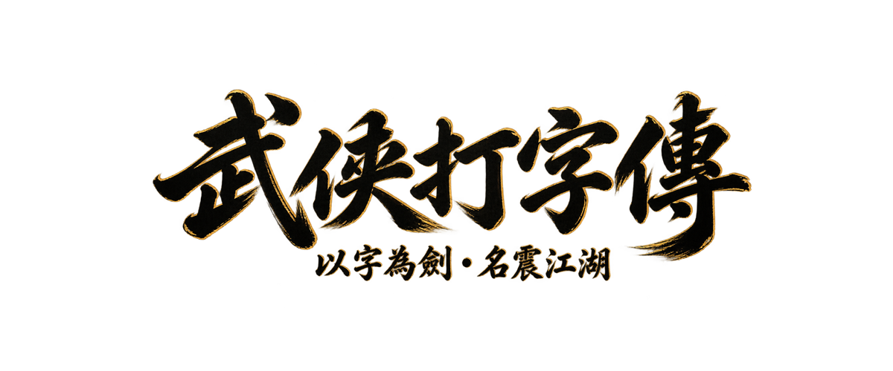

桃木短劍年級題本各自保存進度，銅錢與裝備共用。也可以建立自訂題本或進行錯題特訓。
依年級混合已收錄的康軒、翰林、南一分類範例與原創散文短句，每關隨機練習 10 題。現有出版社範例只涵蓋一至三年級，正式課次尚待核對；四至六年級目前為原創散文。教育部字音練習採官方國語小字典。
直接貼上學校聯絡簿的國語生字、成語或英文單字（以逗號或換行分隔）。
使用教育部國語小字典離線標音。字典例詞或既有遊戲詞庫可採完整標音，其餘多音字會提示候選讀音；未收錄字請手動補上。
可輸入純國字（如：小橋, 流水）或附帶注音（如：小橋(ㄒㄧㄠˇ ㄑㄧㄠˊ)），每字一組、以空白分隔：
教育部國語小字典・
完整使用說明・
CC BY-ND 3.0 臺灣
